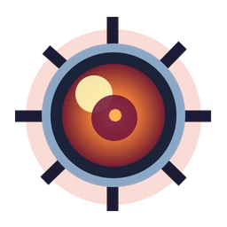
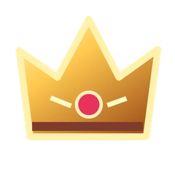

잃어버린 왕국의 지뢰를 해제하고, 보스를 쓰러뜨려라.
게임 모드
⚔ 모험 / 보스전
🔥 보스 러시
◈ 클래식 지뢰찾기
난이도
초급 · 9×9
중급 · 16×16
고급 · 30×16
↻
새 전투
?
♫
◷
경과 시간
00:00

남은 지뢰
012

획득 점수
0
ϟ
연속 콤보
×1
최고 점수
0
STAGE 01 · 숲의 부름
에메랄드의 숲
모든 안전한 칸을 밝혀내세요.
깃발 모드
OFF
Ⅱ
첫 번째 칸은 항상 안전합니다. 탐험을 시작하세요!
✦
✦
✦
왕국 원정 지도
스테이지를 클리어하여 다음 지역 해금
QUEST COMPLETE
승리!
닫기
계속하기